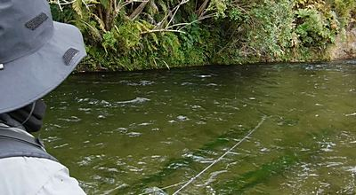
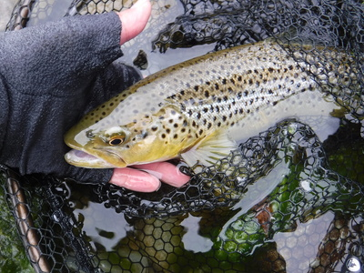
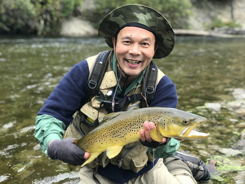
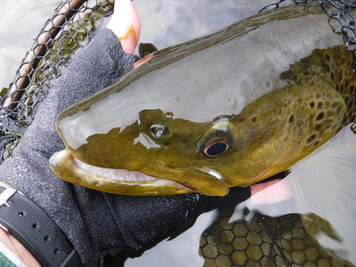
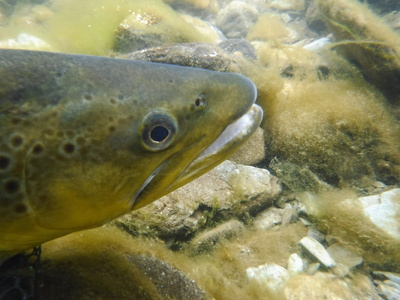
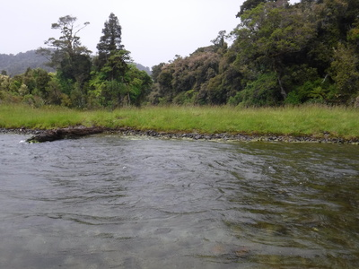
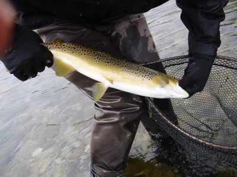
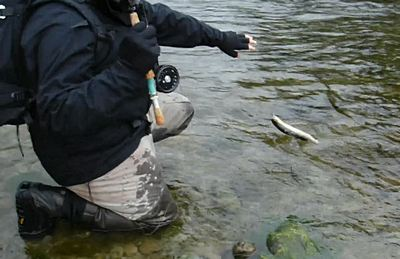

釣行日誌 ＮＺ編 「一期一会の旅：A Sentimental Journey」
にわか雨の中で
11/24(SAT)-3
ディーンからロッドを受け取り、静かに上流へと歩みを進め、それから瀬の中に立ち込んで対岸の崖下の茂みに引っかけないよう注意してストリーマーを振り込む。しかし、もう20cmの正確さが足りず、鱒が定位して居るであろう緩流部に届かない。草に当てるつもりで１番奥を狙え！というアドバイスに従い、再びキャスト。水しぶきの上がっていたあたりまで流してからアクションを付ける。早瀬の流れの中をスイングしつつ白いフライが泳いで来るが、鱒は追ってこない。唯一得意とする左サイドキャストを何度も繰り出して投げ込んでみるが反応は無い。
「おかしいなぁ～？ ちょっと貸して。」

彼の数回のキャストののち、白いストリーマーがドンピシャの位置に入る。ロッドティップによるアクション。３ｍほど引っ張って再度キャストの繰り返し。どうもフライが合わないようで、3つ目のホワイトベイトパターンに彼は結び替えた。どれもブリントさんのオリジナルだそうだ。マッチ・ザ・ベイトのフライフィッシングである。フライを替えてから７投目くらいでロッドがガクンと曲がり、ラインがピーンと張った。
「おおっ！来たねっ！」
楽々と上げてくると、30cmを少し超えたくらいの銀色のブラウンだった。この個体も生まれた上流域から海へ下る途中なのかも知れなかった。
それでは今度は僕の番！ということでロッドを受け取り、少し上流の淵尻を狙ってみる。ところがディーンが、
「ゴウ、そのレインジャケットは色が明る過ぎてほとんど白だ。目立ちすぎるから脱いだ方が良いぞ。」
と言うので（事実上の命令....）、仕方なく脱いで小雨を我慢して釣る。（笑） グレースさん手作りのフリースベストのおかげで寒くはなかった。
淵尻の沈木の上流側を引いてくると「カツっ」という鋭いアタリが！ すかさず合わせると、向こうで小ぶりな魚体がギラリと光る。
『あまり大きくは無いな....。』
それでもバラさないようラインのテンションを保ちつつ寄せてくると、下流に回り込んでディーンがランディングしてくれた。
「よしよし！」
どうやら３つ目のフライが今日のこの川での当たりパターンのようだ。

40cm弱の若い１尾をリリースして、次のポイントへと進む。すると、右から小さなスプリングクリークの出てくる合流点に出た。ここには見覚えがある。
『おお～！ 懐かしいなぁ！』
そう、前回2010年の釣行でブリントさんに連れて来てもらい、支流のどんづまりで中型ブラウンと長い闘いをした思い出のスプリングクリークなのだった。
合流点は魅惑的な深い大淵になっており、そこで１尾良型を掛けた。いささか左腕の筋肉痛がひどくなっていたが、水面に刺さったティペットが走るのを見ていると、そんなことは忘れてしまう。(笑) キャストは悲惨だが、ファイトは何となく要領と勘を取り戻しており、ディーンに教わったとおりに鱒を下流側の岸辺に寄せてくる。そしてネットへ。
「やったな！」
「ありがとうっ！」
これも下顎のしゃくれたがっしりとした良い鱒だった。



他にももう２尾、同クラスの魚影が淵の深みに見えたが、そいつらは喰ってこなかった。さらに歩いて行くと、対岸に１本倒木のある瀬に出た。ここも見覚えがある。８年前にブリントさんが中型を掛けて惜しくもバレてしまったポイントだ。
「あの倒木の下流側に出来た淀みが狙い目だぜ。」

アドバイスを受けて、幹にフライを引っかけないよう注意して振り込む。師匠のマネをして竿先でアクションを付けてスイングしてくると、強くなった雨が作る水面の波紋の下から重いショックが！
『乗ったァ！』
広い瀬なので、下流への最初のダッシュを止めてしまえばあとはこちらのペース。じっくりと落ち着いて足下まで寄せてからランディングしてもらう。そして固い握手。
「今度は、あの倒木の下流を３ｍピッチで続けて探ってみて。」
言われたとおりに順番に打ち込んでゆくと、それぞれのポイントに投げ込む一方から喰い付いてくる。ワンキャスト・ワンフィッシュ状態となった。浅い流れだが、対岸の淀みと流心の際にブラウンたちが寄りかたまって居着いているらしい。対岸ギリギリの緩い筋を遡上してくるホワイトベイトを皆で待ち構えているのだろう。


釣行日誌ＮＺ編 目次へ
サイトマップ
ホームへ
お問い合わせ